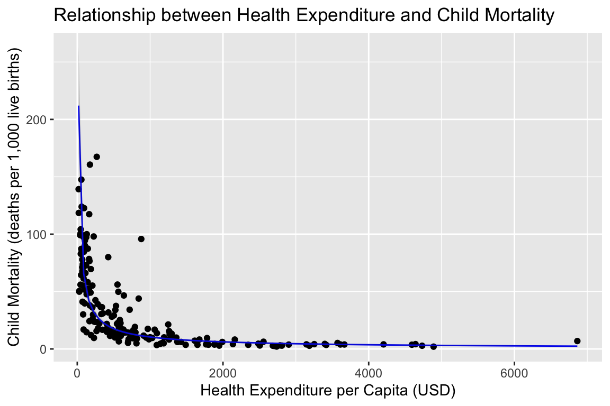

Introduction
On this web page you will find the homework, practical exercises and weekly quiz for Unit 4 of BIO144.
All other information for the course is on the OLAT course webpages, and web pages linked to from there: OLAT BIO144 Info. Hub
Homework
All homework is for your own practice and learning. It will not be marked or graded.
Homework common to all weeks:**
Review the material from the lecture(s) this week. Make sure you understand the concepts and ideas presented. Ensure you can follow any mathematical or statistical explanations. Ensure you can do the R that is needed for the week’s learning objectives.
When you find things you don’t understand or have trouble doing (e.g., in R), make a note of these. You can then ask a teaching assistant (TA) for help during the practical session, and you can ask on the Discussion Forum on OLAT. You can also ask questions during the lectures.
Code walkthrough
Work through the code walkthrough script for this week’s course book chapter, and watch the video walkthrough of it. Both are linked at the top of the chapter: Regression Part 2. The last section of the script (“Practical toolbox”) shows code that this practical uses but the chapter does not.
Optional further reading
The rest of section 5.5 (interpreting a regression model) of Getting Started with R (2nd edition), Beckerman, Childs & Petchey. (Not examinable, unless it is also in the course book.)
Seeing theory
This amazing website is a visual introduction to probability and statistics. It is worth exploring this website to help you understand some of the statistical ideas we cover in this course. Here is the section on regression.
Practical part 1
Interpreting regression results
Last week we worked with the financing healthcare dataset. We will continue working with this dataset this week.
Bring up your script from last week. It should already include:
- Loading the dataset.
- Some initial exploration of the dataset.
- Some initial plots of the dataset.
- Fitting a linear model to the dataset (with log10 transformed variables)
- Checking the assumptions of the linear model.
Now that we have checked the assumptions of the linear model, we can interpret the results of the model. We need to look at a few things:
- The slope.
- The intercept.
- The amount of variability explained.
- The statistical significance.
- The degrees of freedom for error.
However, stop! Before you continue, make guesses of the intercept, slope, significance, and degrees of freedom for error. Write your guesses down somewhere. Do not move on until you have done this!
We can get all of these with one function in R:
summary(). Add this to your script, run it, and work
through the following questions.
A true story… when Prof. Petchey wrote this practical, he did exactly
what he’s now advising you: make a guess of the slope from the graph,
and then use lm() to calculate the slope. However, he found
that they were quite different! The guessed slope was about -0.75 but
the value given by lm was around -1.0. This was too big a difference to
ignore! It was like an alarm bell ringing, that something was probably
wrong. Prof. Petchey found that he’d got the response and explanatory
variable in the lm switched the wrong way round. Fixing this made the
calculated slope also about -0.75.
This is a real example of how making a guess before doing the analysis and comparing this to the calculated value provides us with a method for cross checking our work. If we always build in such cross checks, we will much more frequently spot our mistakes. And if there is one thing that’s certain… we will make mistakes!
Checking back: You made and wrote down guesses of the intercept, slope, significance, and degrees of freedom for error. Were your guesses close to the estimated values? Mine were very close. So in this case, we didn’t gain any qualitative information from the regression, but we did gain some quantitative confirmation of what we already new. This is often the case for simple problems, like regression: we can see just as much from looking at the data as we can from a formal regression analysis. We do both, as then we can be more confident in our results. We should never trust only looking at our data, and we should never trust only doing an statistical test. We always should do both and compare them.
Uncertainty, prediction and extrapolation
The summary table gives us the estimates, but we also need to say how
certain we are about them, and we often want to use the model to make
predictions. In this section we call the model object
m_child_mort (use whatever name you gave yours, and
consider renaming it to something this meaningful).
Where does the t-value come from? Look at the row for the slope in the summary table. The t-value is simply the estimate divided by its standard error.
Confidence interval for the slope. You can calculate a 95% confidence interval as the estimate ± (critical t-value × standard error). The critical t-value comes from a t-distribution with the residual degrees of freedom, here n − 2 = 184:
qt(0.975, df = 184)Or, easier and safer, let R do the whole calculation:
confint(m_child_mort)Correlation versus R². The correlation coefficient r measures the strength and direction of the linear association between two variables. R² is the proportion of the variation in the response that the model explains. Calculate the correlation between the two log-transformed variables:
cor(fh_2013$log_health_exp_total, fh_2013$log_child_mort)Predictions, with confidence and prediction
intervals. Use predict() to get the expected child
mortality for a country spending USD 100 per person per year, and for
one spending USD 5,000. Remember that the model works on the log10
scale, so we give it log10 values and then back-transform the
predictions with 10^:
new_spending <- data.frame(log_health_exp_total = log10(c(100, 5000)))
pred_conf <- predict(m_child_mort, newdata = new_spending, interval = "confidence")
pred_pred <- predict(m_child_mort, newdata = new_spending, interval = "prediction")
10^pred_conf
10^pred_predExtrapolation. Find the largest value of health care spending in the dataset. Then predict child mortality for a country spending USD 20,000 per person per year.
Reporting the results
When reporting the results of a regression analysis, it is important to focus on the key components that convey the most meaningful information about the relationship being studied.
So this would be our sentence reporting the results:
Across 186 countries in 2013, child mortality was strongly and negatively related to health care spending. On log–log scales the slope was −0.76 (95% confidence interval −0.82 to −0.69), meaning that a doubling of per capita health care spending was associated with about 41% lower child mortality (95% CI 38% to 43% lower) (linear regression, 184 degrees of freedom for error, t = 24.1, p < 0.0001, R² = 0.76).
Note three things about this sentence. First, it gives the size of
the effect together with its uncertainty (the confidence interval, which
you get with confint() on your model). Second, it
translates the slope from log units into something a biologist or policy
maker can understand. With log–log regression, the slope tells us the
proportional change in the response for a proportional change in the
explanatory variable: doubling spending multiplies child mortality by
2^−0.76 ≈ 0.59, i.e. about 41% lower. (The same calculation on the two
ends of the confidence interval gives the interval for the percentage.)
See the course book, Chapter 3, section Interpreting a model with
log-transformed variables. Third, it says “associated with”, not
“caused”: more on this below.
Reporting graphically
Make a beautiful graph that you would be happy publishing, for all the world to see. (Use the x and y log transformed data still.)
Ensure:
- Appropriate size and dimensions of all elements.
- Appropriate axis labels with units of measurement.
- Appropriate text size and point sizes.
- Include the regression line with a confidence interval band.
Special distinction if you can:
- Add some labels to the data points, so one can see which countries are which.
- Colour the points by continent, and include a graphical key.
A linear-linear graph
A thorny issue remains! We have reported our results based on analysis of the log transformed data. For the purposes of you learning about regression, this is just fine. You learned what can be applied in all cases.
However, there is an extra step that we should at least think about: what do our findings imply about the relationship between the untransformed variables? This is quite relevant, because we’re often interested in money, not log transformed money, and child mortality, and not log transformed child mortality.
Here is the graph of the data and regression line back on the raw (untransformed axes) (the code to make this is at the bottom of this page):

Policy implications and recommendations
Analyses such as the one you did can be important for influencing policy, such as whether to increase or decrease spending on healthcare.
Do you think it would be appropriate, based on these analyses, to recommend that a country with healthcare spending above about 2’000 dollars per capita per year should not prioritise increases in healthcare spending, as this would lead to little if any decrease in child mortality?
The answer is that one would have to be very cautious, in the least. And perhaps avoid this altogether.
Code to make the untransformed graph
fh_data <- read_csv("financing_healthcare.csv")
fh_2013 <- fh_data |>
dplyr::filter(year == 2013) |>
dplyr::select(country, health_exp_total, child_mort) |>
tidyr::drop_na() |>
dplyr::mutate(
log_health_exp_total = log10(health_exp_total),
log_child_mort = log10(child_mort)
)
m_child_mort <- lm(log_child_mort ~ log_health_exp_total, data = fh_2013)
new_data <- data.frame(
health_exp_total = seq(min(fh_2013$health_exp_total), max(fh_2013$health_exp_total), length.out = 100)
)
new_data <- new_data |>
dplyr::mutate(
log_health_exp_total = log10(health_exp_total)
)
preds <- predict(m_child_mort, newdata = new_data, interval = "confidence")
new_data <- new_data |>
dplyr::mutate(
log_child_mort_fit = preds[, "fit"],
log_child_mort_lwr = preds[, "lwr"],
log_child_mort_upr = preds[, "upr"],
child_mort_fit = 10^(log_child_mort_fit),
child_mort_lwr = 10^(log_child_mort_lwr),
child_mort_upr = 10^(log_child_mort_upr)
)
ggplot() +
geom_point(data = fh_2013, mapping = aes(x = health_exp_total, y = child_mort)) +
geom_line(data = new_data, aes(x = health_exp_total, y = child_mort_fit), color = "blue") +
geom_ribbon(data = new_data, aes(x = health_exp_total, ymin = child_mort_lwr, ymax = child_mort_upr), alpha = 0.2) +
#scale_x_log10() +
#scale_y_log10() +
labs(
x = "Health Expenditure per Capita (USD)",
y = "Child Mortality (deaths per 1,000 live births)",
title = "Relationship between Health Expenditure and Child Mortality"
) Weekly Quiz
Solutions
Please read this before you open the solutions.
- You will learn much more if you solve the practical yourself first, ideally together with other students, and ask a teaching assistant when you are stuck. Use the solution script afterwards, to check and compare your own work.
- The solution script shows one way to solve the practical. It is not the only way: different code that gives the same answers is just as good.
The example solution script for this practical is here: unit04_practical_solution.R
To download it straight into your RStudio project folder, run this line in the Console:
download.file("https://raw.githubusercontent.com/opetchey/BIO144_Practicals_WAs/refs/heads/main/solutions/unit04_practical_solution.R", destfile = "unit04_practical_solution.R")Then open it in RStudio and work through it line by line, comparing it with your own script. The comments explain each step and give the answers to the questions in the practical.